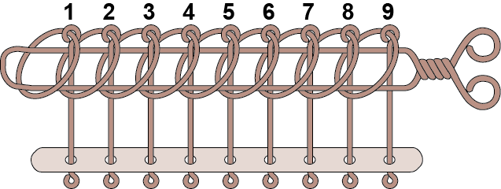
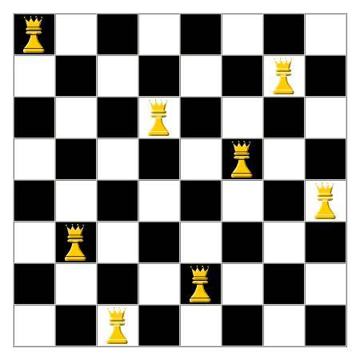
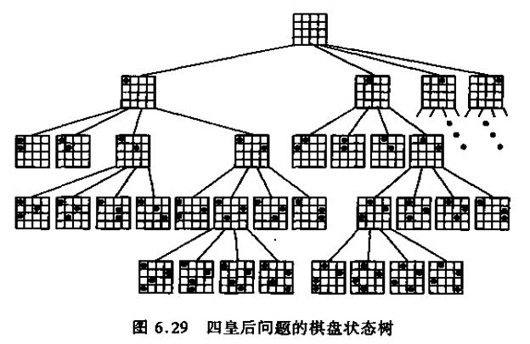
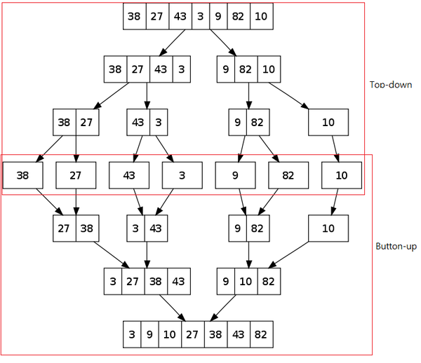

\( \newcommand{\ord}[1]{\mathcal{O}\left(#1\right)} \newcommand{\abs}[1]{\lvert #1 \rvert} \newcommand{\floor}[1]{\lfloor #1 \rfloor} \newcommand{\ceil}[1]{\lceil #1 \rceil} \newcommand{\opord}{\operatorname{\mathcal{O}}} \newcommand{\argmax}{\operatorname{arg\,max}} \newcommand{\str}[1]{\texttt{"#1"}} \)
進階遞迴
遞迴大家都學過了，所以就用一些練習題來複習一下吧!
但是題目會比之前的還進階喔
九連環

九連環的規則
九連環一開始的時候有9個環，全部按順序套在一個柄上
每個環是互相牽制的，除了第１環，要取下或套上其他環是要在特定的狀態下才可以的，其規則有二：
規則一：第１環可以在任何時候套上或取下。
規則二：想套上或取下第N環 (N > 1)，就必須將第 N-1 環套在柄上，而第 1 到 N-2 環全部取下，如此才能套上或取下第 N 環。
有沒有遞迴的感覺?
給大家3分鐘想想遞迴式吧
九連環的遞迴式
設\(in(n)\)為把前\(n\)個環套上所需的操作數，\(out(n)\)為把前\(n\)個環拿下所需的操作數，則:
$$in(n)=in(n-1)+out(n-2)+1+in(n-2)$$ $$out(n)=out(n-2)+1+in(n-2)+out(n-1)$$ 當\(n=1\)時，\(in(n)=out(n)=1\)
可以寫程式了!
八皇后問題

八皇后問題
在 8x8 的西洋棋棋盤上擺放八隻皇后，讓他們恰好無法互相攻擊對方，為了達到此目的，任兩個皇后都不能處於同一條橫行、縱行或斜線上。
目標是要算有幾種排列方式
想法
把所有的情況列出來吧

小心TLE喔
有趣的性質
應該對八皇后的解法很有幫助吧
merge sort
排序左半，排序右半，合併
大家應該知道std::sort()吧?
雖然很方便但是大家應該還是要學一下merge_sort
因為這次的作業會用到!
預備知識
序列合併問題
sorted array merge problem
給你兩個已經排序好的陣列\(A\)和\(B\)
請將這兩個陣列合併成一個排序好的陣列\(res\)
例如:
$$A=\{1,3,5,7\}$$ $$B=\{2,4,7,9,16,20\}$$ 則經過此算法後 $$res=\{1,2,3,4,5,7,7,9,16,20\}$$
有沒有什麼很快的作法?
很快的作法
合併的時候每次拿最小的，不過因為兩個陣列都已經被排序好，所以至多只需要檢查兩個元素
分析
因為每次只比較兩個元素，而且$A,\;B$兩陣列都會被存到$res$裡面，所以最多會執行約$\abs{A}+\abs{B}$次操作
正題
我們可以利用
序列合併問題
來排序:
把一個序列從中間切分成兩個序列，將兩個序列排序完後合併
如果切分的序列長度>1，則繼續按此方法排序
這句話有沒有遞迴的感覺?

仔細看這過程，會發現每次都是把序列從中間切開，直到剩下一個元素為止
這樣做的話，會發現整棵樹的深度為$\ceil{log_2(n)}$
每一層有$n$個元素，用merge合併的話操作次數為$n$次
因此總共約會有$n*\ceil{log_2(n)}$次操作
merge sort的影片
分治法
Divide & Conquer
像這種把要算的東西分成很多份(不一定是分兩半)，分別把那幾分遞迴處理完之後，在合併成原來的答案
這種做法就稱為分治法
這次的作業中有分治法的題目喔
至於要怎麼分治就留給你們想像吧
遞迴題目
遞迴題目
Recursion
九連環
八皇后
看著數列的卦長